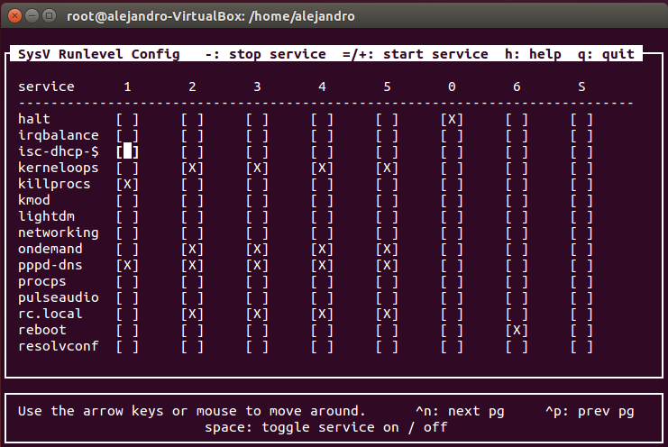
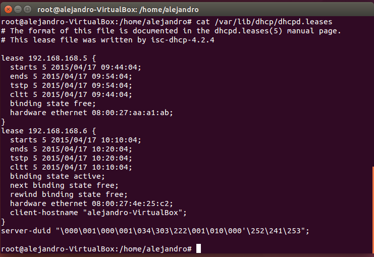

En primer lugar, es necesario realizar la instalación del servidor DHCP
ejecutando:
# apt-get install isc-dhcp-server
Una vez instalado, vamos practicar un poco con esto, configurando el servidor DHCP para asignar
dinámicamente direcciones IP a la red 10.0.0.0/24 y para realizar una reserva al equipo
con dirección MAC
(AA.BB:CC:DD:EE:FF) para que se le asigne siempre la dirección IP 10.0.0.254.
Para comenzar con la configuración, debes indicar los parámetros generales del servidor y
comunes a los equipos de la red, la información necesaria para que éste sepa cómo
comportarse. Así, si el servidor dhcp.ejemplo.es es el que tiene la autoridad sobre la zona,
se quiere que el tiempo máximo de asignación de una dirección IP sea de una semana
(max-lease-time). Para ello el fichero /etc/dhcp/dhcpd.conf debe tener el siguiente
contenido:
authoritative;
one-lease-per-client on;
server-identifier 10.0.0.1;
ddns-update-style interim;
default-lease-time 600;
max-lease-time 604800;
El siguiente paso es introducir los parámetros generales que se transmitirán a los clientes
de la red. La red 10.0.0.0 con la máscara de red 255.255.255.0 tiene como puerta de enlace
la dirección IP 10.0.0.1 y
quiere utilizar los servidores de nombres 8.8.8.8 y 194.224.52.36. Además, hay que tener en
cuenta el rango de direcciones IP que desea asignar por DHCP que en el
ejemplo es desde la dirección 10.0.0.100 a la 10.0.0.254.
A partir de estos parámetros de configuración debes escribir en el fichero la siguiente
configuración:
subnet 10.0.0.0 netmask 255.255.255.0 {
range 10.0.0.100 10.0.0.254;
option domain-name-servers 8.8.8.8, 194.224.52.36;
option domain-name "miempresa.com"; <br /> option routers 10.0.0.1;
option broadcast-address 10.0.0.255;
}
Como se desea realizar la reserva de la dirección IP 10.0.0.254 para el portátil con la dirección MAC AA:BB:CC:DD:EE:FF debes añadir
las siguientes líneas:
host portatil {
hardware ethernet AA:BB:CC:DD:EE:FF;
fixed-address 10.0.0.254;
}
A continuación indicamos la interfaz de red donde queremos que el servidor dhcpd ofrezca sus
servicios. Para ello el fichero /etc/default/isc-dhcp-server debe tener el
siguiente contenido:
siendo eth1 la interfaz de red elegida.
Para comprobar que la configuración del servidor dhcpd se ha realizado correctamente ejecuta:
Una vez configurado correctamente el servidor, inicia el servicio ejecutando:
# service isc-dhcp-server start<br />ó<br /># /etc/init.d/isc-dhcp-server start
Finalmente, hay que configurar el sistema para que se inicie automáticamente el servicio dhcp
al iniciar el equipo. Para ello, se puede usar la herramienta sysv-rc-conf, que previamente
habrá que instalar y luego ejecutar
# apt-get install sysv-rc-conf<br /># sysv-rc-conf
Tras ejecutarlo, saldrá la siguiente pantalla, desde la cual se marca con una X, para cada
servicio, en qué nivel de ejecución se desea que se ejecute.
Panel de sysv-rc-conf
Para conocer el nivel de ejecución actual bastaría con ejecutar
Por tanto, buscando el servicio isc-dhcp y marcándolo para el nivel de ejecución actual, el
servidor DHCP se ejecutaría cada vez que arrancase el equipo.
De esta forma el servidor dhcpd irá asignando automáticamente las direcciones IP a los equipos que se conecten a la red.
Para comprobar las asignaciones que se han realizado puedes consultar el fichero
/var/lib/dhcp/dhcpd.leases donde, como puedes ver a continuación, se muestran los datos de
cada concesión de dirección IP:
Contenido del fichero /var/lib/dhcp/dhcp.leases: Concesiones de
direcciones IP por DHCP
Datos más importantes del servicio DHCP.
| Nombre del servicio: |
isc-dhcp-server |
| Fichero de configuración: |
/etc/dhcp/dhcpd.conf |
| Concesiones de direcciones: |
/var/lib/dhcp/dhcpd.releases |
| Comandos más utilizados: |
dhcpd
dhclient |


{kind=link}
{kind=link}
{kind=link}
{kind=link}
{kind=link}
{kind=link}
{kind=link}
{kind=link}
{kind=link}
{kind=link}
{kind=link}
{kind=link}
{kind=link}
{kind=link}
{kind=link}
{kind=link}
{kind=link}
{kind=link}
{kind=link}
{kind=link}
{kind=link}
{kind=link}
{kind=link}
{kind=link}
{kind=link}
{kind=link}
{kind=link}
{kind=link}